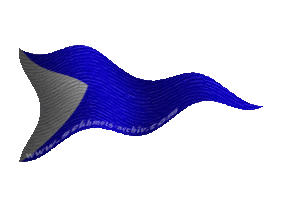
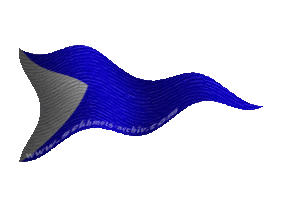

|

|
Das schwarze Brett
|
|
| Übersicht,
Anschläge und Stammtisch (RPG) |
|
Beweise gegen unserer Nation (3  ) )
|
| Lana Ethiatrem (RIP) |
Lola,
ihr könnt sagen was ihr wollt, ich werde euch nicht glauben. Für mich seit ihr eine dreckige verlogene Hure.
Es hat nichts mit Famlienehre zutun, wirihr es sagt.
Pyriandar,
mir ist es egal, wann ihr wo was gemacht habt. Und ihr könnt mir bestimmt nichts zeigen, was ich noch nicht mit Ferret erlebt habe. Ich wollte von Lola wissen, wann es war, das sie angeblich was mit Ferret hatte.
Und zum Guten Schluss, dieser Streit hier,hatüberhaupt nix mit diesem anschlag zutun, also schweigt besser.
Lady Lana von Hexenhain,
Ehefrau des ehrenwerten Ferret
Zur 2. Stunde am 13.Erntemond im Jahre 418 |
12.12.04 1:32
|
|
| Aurelen en Môr Greenleaf (RIP) |
*lacht laut auf*
Pyriandar, Ihr erheitert mich.
Die Zeiten da ich mit meinem Bruder das Bett teilte sind seit unserer juengsten Kindheit vorbei, und das Kleinkinder gemeinsam in einem bett schlafen, ist wohl nichts unrechtes.
Aber Eure Anschuldigung hat einige recht lustige Erinnerungen an Kissenschlachten aus Kindheitstagen hervorgerufen.
Dennoch rate ich Euch, wie auch schon mein Bruder es tat, haltet Eure Zunge im Zaum!
Lady Aurelen en Môr
Zur 2. Stunde am 13.Erntemond im Jahre 418 |
12.12.04 1:33
|
|
| Aurelen en Môr Greenleaf (RIP) |
Pyriandar, ich behaupte es nicht, ich weiß es.
Und das nicht etwa weil ich, wie Ihr sagt, Hautnah dabei bin, sondern weil ich meinen kleinen Bruder kenne.
Nicht mehr und nicht weniger.
*schmunzelnd*
Lady Aurelen en Môr
Zur 2. Stunde am 13.Erntemond im Jahre 418 |
12.12.04 1:37
|
|
| Lola Altbier (RIP) |
Lana, ob Du mir glaubst oder nicht ist für mich nicht von Belang. Ferret hatte mich etwas gefragt, ich habe geantwortet. Hure? Gut erkannt *schmunzelt* Dreckig? Du wirst doch hier nicht mit Beleidigungen um Dich werfen wollen nur weil Dein kränkliches Ego angekratzt wurde? Ich kann nichts dafür wenn Du die Wahrheit nicht erkennen oder aktzeptieren willst. Aber das ist nicht mein Problem.
Ist abe rnur zu verständlich das der gute alte Ferret alles leugnet, wer würde es nicht an seiner Stelle tun...
Lola Altbier,
FAKTsche Freischaffende
Zur 2. Stunde am 13.Erntemond im Jahre 418 |
12.12.04 1:39
|
|
| Pyriandar (RIP) |
Aurelen,
dann musst du ja Lana selbst ausprobiert haben, ansonsten kann ich mir nicht vorstellen, wie du das wissen willst, dass Lana wohl alle Bedürfnisse von Ferret befriedigt.
Lana,
kommen da doch Zweifel auf?
Pyriandar
Zur 2. Stunde am 13.Erntemond im Jahre 418 |
12.12.04 1:39
|
|
| Aurelen en Môr Greenleaf (RIP) |
Pyriandar, verzeiht mir, aber ich kann wirklich nur ueber Euch lachen!
Lady Aurelen en Môr
Zur 2. Stunde am 13.Erntemond im Jahre 418 |
12.12.04 1:41
|
|
| Lana Ethiatrem (RIP) |
Auri, ich glaube wir lassen den beiden ihre Wahnvorstellungen. Ihnen ist einfach nicht mehr zu helfen.
Lady Lana von Hexenhain,
Ehefrau des ehrenwerten Ferret
Zur 2. Stunde am 13.Erntemond im Jahre 418 |
12.12.04 1:42
|
|
| Aurelen en Môr Greenleaf (RIP) |
Ja Lana, ich denke Du hast Recht, auch wenn ich zugeben muss das ich es aeusserst erheiternd finde mich mit den beiden zu unterhalten.
Lady Aurelen en Môr
Zur 3. Stunde am 13.Erntemond im Jahre 418 |
12.12.04 1:45
|
|
| Lana Ethiatrem (RIP) |
Ja auri, es macht Spaß *lächelt*
Aber bei diesem Anschlag geht es um ein ganz anderes Thema. Sonst würde ich noch weiter diskutieren
Lady Lana von Hexenhain,
Ehefrau des ehrenwerten Ferret
Zur 3. Stunde am 13.Erntemond im Jahre 418 |
12.12.04 1:46
|
|
| Gîlbelle ô Gláneth (RIP) |
Werte Lana von Hexenhain,
bezüglich der Überwachung von Lola Altbier durch einen Heiler, müsst ihr euch nicht sorgen - ich kontrolliere regelmäßig ihren Gesundheitszustand. Zugegebenermaßen weniger aus Sorge um die arme Lola, sondern weil ich gelegentlich selbst so meine Zweifel habe, ob mit ihr noch alles so in Ordnung ist. Das Ergebnis ist stets dasselbe: Als körperlich Gesund kann man die Gute sicherlich nicht bezeichnen - die vielen verschiedenen Freier und die langen Fahrten auf See hinterlassen ihre Spuren - aber ihr Schädel scheint zumindest in Ordnung. Ansonsten macht ihr nur der dauernde Rumkonsum etwas zu schaffen, jedoch soll Alkohol bekanntermaßen ja die Wahrheit zu Tage fördern.
Weiterhin finde ich es interessant, dass Ferret angeblich stets an eurer Seite sein soll - habt ihr ihm "Platz", "Beifuß" und "Gib Laut" auch schon beigebracht, wo ihr ihn laut eigener Aussage bereits an der Leine spazieren führt?!
Eine Frau, die sich öffentlich über die normalen Gegebenheiten unserer Gesellschaft erzürnt, nämlich dass die werten Herren Freudenhäuser besuchen und mit Huren Leidenschaften fröhnen, macht sich nur lächerlich. ((in der Zeit, in der wir die Scherbe angesiedelt sehen, war es vollkommen normal und die Ehefrau hatte brav den Mund zu halten ;) ))
Zugegeben, ist es auch von der Hure nicht die feine Art ihre Freier am Anschlagbrett anzuturteln, jedoch sollte man dies gekonnt übersehen, anstatt sich auf eine peinliche Diskussion einzulassen.
Werte Aurelen en Môr,
öffentlich zu behaupten, dass ihr euren Bruder derart gut kennt, dass ihr über seine sexuellen Vorlieben bescheid wisst, halte ich für familiär gewagt. Wenn man sich jedoch betrachtet, auf welche Weise ihr euch habt portraitieren lassen, könnte man diverse Vermutungen aufstellen über eure eigene "Berufung". Ich denke jedenfalls nicht, dass ihr euch einmischen solltet, weil die Frau eures Bruder zickig wird und seine Geliebte anfährt.
Da war doch noch ein anderes Thema, wegen welchem der Anschlag gemacht wurde...achja...genau...
Werter Freiherr Kelestor,
ich halte es für überzogen die ehemaligen Mitglieder des Bündnis Hoffnung in Reihen des Volk von Lothiens als Verräter zu betiteln. Man kennt die Art der VvL, alle Bewohner der Insel der Hoffnung welche sich in anderen Nationen derzeit in Schwierigkeiten befinden, anzuschreiben und ihnen anzubieten doch bei VvL unter zu kriechen - dass da einige schwach werden, kann man kaum verübeln. Die Scherbe besteht nunmal nicht nur aus starken Persönlichkeiten. Diese Art des Volkes von Lothien mag nicht jedem gefallen und sicher noch weniger, dass sie von Zeit zu Zeit sogar fruchtet, dennoch sollte man eben diejenigen, die das Angebot annehmen, nicht verurteilen - bei soviel Großmut fällt es eben schwer "Nein" zu sagen.
Generell, finde ich, macht ihr etwas viel Trarah um die Sache. Krassus mag euch öffentlich als Diebesnation bezeichnet haben - ein solch kleiner Einwurf in irgendeinem Anschlag macht jedoch noch keinen Rufmord. An die große Glocke gehängt habt ihr die Angelegenheit und fordert die Scherbe somit indirekt dazu auf, sich eine Meinung über euch und die euren zu bilden. Ich denke nicht, dass Volk von Lothien sich noch dazu hinreißen lassen wird, die Routensperre wieder aufzuheben oder Beweise vorzulegen - ich bin sicher, dies habt ihr bereits während des Briefwechsels mit Krassus erahnen können. Ich denke weiterhin, dass der Ruf von Volk von Lothien unter dieser Kleinigkeit nicht leiden wird - was ihr euch ebenfalls hättet denken können, bevor ihr hier den Versuch der Diffamierung dieser Leute unternommen habt.
Also tut euch und eurer Nation den Gefallen und beredet alles weitere zu diesem Thema per Taube, bevor ihr euch selbst weiter in ein Erdloch schraubt. Ein Absinken dieses Anschlags würde zudem noch den Haussegen bei Ferret wieder gerade hängen - Lola Altbier hat in diesem Anschlag schließlich die einzig brisante Information offenbart.
Mit freundlichen Grüßen,
Gräfin Gîlbelle ô Gláneth,
Vorsteherin von Viribus Unitis,
Anführerin der glorreichen Nation "FAKT",
Medicus Humanus
Zur 3. Stunde am 14.Erntemond im Jahre 418 |
12.12.04 7:27
|
|
| Aszantu Janka (RIP) |
*kichert böse* wie schnell sie siche in den haaren liegen um über privates zu diskutieren... gut gemacht Herrin Altbier. *aplaudiert und hält dann inne* ... entschuldigt die Damen und Herren *lächelt unterwürfig* ich wollte euch nicht unterbrechen...
Aszantu Janka,
Anführer der glorreichen Nation "Espoir de l´obscurité"
Zur 13. Stunde am 14.Erntemond im Jahre 418 |
12.12.04 9:51
|
|
| Belzebub (RIP) |
*bebend trett ich herran an den Anschlag*
Allein sie haben schrecklich viel gelesen.
Wie machen wir´s, daß alles frisch und neu
Und mit Bedeutung auch gefällig sei?
Ich glaub es nicht, es ist ein Spass
an dies hier, dieser Fars....
Laßt Phantasie, mit allen ihren Chören,
Vernunft, Verstand, Empfindung, Leidenschaft,
Doch, merkt euch wohl! nicht ohne Narrheit hören.
har har......
*lachend geh ich von dannen und merk :
Die reden hier von Kelestor gehen mich nichts an,
Er haust in seiner eigenen Hölle;*
Sir Belzebub,
Anführer der glorreichen Nation "Die Bukaniere"
Zur 18. Stunde am 14.Erntemond im Jahre 418 |
12.12.04 11:03
|
|
| Kelestor (RIP) |
Werte Gräfin Gîlbelle ô Gláneth,
Beweise sind etwas, was man sehr wohl fordern darf, wenn man immer wieder aufs Neue von ein und den selben Personen als Verbrecher tituliert wird.
Die Beziehung des Ferrets zu Lola Altbier interessiert mich nicht weiter. Wenn die beiden meinen, Ihre Beziehung öffentlich zu bereden, ist es Ihre Sache und nicht meine.
Da ein interner Briefwechsel von Krassus nicht erwünscht wurde, habe ich diese Sache öffentlich gemacht. Ich denke, dies ist ein durchaus legitimes Mittel, um endlich die Beweise einzufordern.
Es ist aber durchaus interessant zu lesen, welche Aussagen Ihr über das VVL macht. Ich denke, dies lässt viel schließen.
Freiherr Kelestor,
Vorsteher von Isengard,
Anführer der glorreichen Nation "Die Ewigen"
Zur 3. Stunde am 15.Erntemond im Jahre 418 |
12.12.04 13:04
|
|
| Angelina (RIP) |
Ich frage mich beim Lesen dieses Anschlages, warum man keine Beweise offenlegt und nur beschuldigt.
Beweist man nicht allzugern etwas, um seine Aussagen zu untermauern und nicht als Lügner dazustehen?
Man kann keinen Glauben schenken, der nicht beweisen will. Da kann nur etwas faul sein.
Gala Naumova
Zur 9. Stunde am 15.Erntemond im Jahre 418 |
12.12.04 14:31
|
|
| Tiron (RIP) |
das einzige, dem man keinen Glauben schenken darf, ist jegliches Wort von Kelestor. Der schafft es sogar zu Lügen, ohne Worte zu benutzen, wie er dies jedoch anstellt, ist mir nach wie vor ein Rätsel.
und der Aussage von Gräfin Gláneth kann ich mir beipflichten, ich hab mehrere male Beitrittsaufforderungen der VVL erhalten, als unsere Nation in der Krise steckte und meinen Freunden ging es ebenso. Nur kann ich dem nichts Böses erkennen lassen, jede Nation sucht mehr oder weniger Mitglieder. Ob das jetzt nun die feine englische Art ist, bleibt jedoch eine andere Frage
Sir Tiron
Zur 14. Stunde am 15.Erntemond im Jahre 418 |
12.12.04 15:33
|
|
| Kelestor (RIP) |
Nun, werter Tiron, ich werde mich bemühen künftig nur noch zu lügen, wenn ich den Mund auf mache. Leider muss ich dafür erst einmal lernen, ein guter Lügner zu werden.
Freiherr Kelestor,
Vorsteher von Isengard,
Anführer der glorreichen Nation "Die Ewigen"
Zur 17. Stunde am 15.Erntemond im Jahre 418 |
12.12.04 16:18
|
|
| Belzebub (RIP) |
*komm auf den Anschlag zu und als ich dort ankam las ich die Worte des dummen Kelestors und ging wieder lachend fort.*
Sir Belzebub,
Anführer der glorreichen Nation "Die Bukaniere"
Zur 21. Stunde am 15.Erntemond im Jahre 418 |
12.12.04 17:10
|
|
| Kelestor (RIP) |
Nun, mein Hofnarr,
vielleicht sollte ich einfach Eure Schule besuchen. Ich wäre sicherlich kein geleriger Schüler, wohl aber ein motivierter *lacht*
Freiherr Kelestor,
Vorsteher von Isengard,
Anführer der glorreichen Nation "Die Ewigen"
Zur 23. Stunde am 15.Erntemond im Jahre 418 |
12.12.04 17:46
|
|
| Belzebub (RIP) |
Ihr seit schon gut genug im Lügen da ihr es schon in dem Vorletzten Satz bewiesen habt...
Den lest euren eigenen Satz vorher den ihr selber verfasst.
Und der Hofnarr seit ihr nur die paar Zellen fehlen euch um es zu kapieren....
armer armer Kelstor.....
*Spende ihm eine runde Mitleid für Ihn und hoffe viele machen mit auf das er geheilt werde.*
har har
Sir Belzebub,
Anführer der glorreichen Nation "Die Bukaniere"
Zur 1. Stunde am 16.Erntemond im Jahre 418 |
12.12.04 18:04
|
|
| Gilead (RIP) |
Fürwahr werter Kelestor, mein Mitleid sei Euch gewiss, da Ihr als einziger selbst noch nicht bemerkt habt wie leicht Euch die Unwahrheit üder die Lippen kommt.
Gilead,
hoher Konsul der glorreichen Nation Die Gefährten
Zur 13. Stunde am 16.Erntemond im Jahre 418 |
12.12.04 20:53
|
|
| Kelestor (RIP) |
Oh.. Da ist ja wieder mein Lieblingsagitator. Seid mir gegrüßt. *schmunezlt*
Freiherr Kelestor,
Vorsteher von Isengard,
Anführer der glorreichen Nation "Die Ewigen"
Zur 15. Stunde am 16.Erntemond im Jahre 418 |
12.12.04 21:31
|
|
| Michiel de Ruyter (RIP) |
eine runde Mitleid
Michiel de Ruyter
Zur 16. Stunde am 16.Erntemond im Jahre 418 |
12.12.04 21:47
|
|
| Raznor (RIP) |
Auch von mir ettwas Mitleid.
cosmo
Zur 23. Stunde am 16.Erntemond im Jahre 418 |
12.12.04 23:19
|
|
| Tiron (RIP) |
*mich den vorrednern anschließ*
Sir Tiron
Zur 13. Stunde am 18.Erntemond im Jahre 418 |
13.12.04 8:08
|
|
| Dhuriya (RIP) |
*anschlag liest und ebenfalls mitleidsmine aufsetzt*
Ooooooooohhhhhhhhhhhhhh !!!
*lachend von dannen zieht*
NaZguL
Zur 15. Stunde am 18.Erntemond im Jahre 418 |
13.12.04 8:36
|
|
| Kelestor (RIP) |
Nun, ich sehe, dass sich hier viele Gestalten versammelt haben, die man genauer untersuchen sollte. Ich hoffe, Krassus ist weitsichtig genug dies zu tun, wenn seine Beweggründe so sind, wie er es verlautbart hat.
Freiherr Kelestor,
Vorsteher von Isengard,
Anführer der glorreichen Nation "Die Ewigen"
Zur 16. Stunde am 18.Erntemond im Jahre 418 |
13.12.04 8:59
|
|
| Dhuriya (RIP) |
*den anschlag von der hintersten reihe aus betrachtet und stimmen aus der menge wahrnimmt*
"Er ist dumm wie 2 Weissbrote...."
"Schlimmer noch....Verstand wie ein Sack Flöhe - WIRR!!!"
"Ob er je wieder gesund wird? Sein geistiger Zustand scheint erbärmlich"
"Gibt es keine Schulen in Isengard, die Ihn lehren zu begreifen?"
"Scheint so.....das scheint jedoch mit seinem Alter zu tun haben - er ist noch jung und unerfahren, wild und unverbesserlich"
*lauthals lachend von dannend zieht*
NaZguL
Zur 22. Stunde am 18.Erntemond im Jahre 418 |
13.12.04 10:22
|
|
| Florinus Silberpfeil (RIP) |
*den Raum betritt mit einem Stück Stoff in der Hand auf Lola Altbier und Pyriandar
mit festem Schritt zugeht jedem ein Stück Stoff in den Mund steckt und sagt* Ich kann Euer minderwertiges Geschwaffel nicht mehr hören, es ist schrecklicher als das schreien eines Kindes und den Intelligenzinhalt braucht man keinesfalles erwähnen. Desweiteren verbitte ich mir Anschuldigungen irgendwelcher Art gegenüber meine Nichte Lana und meines Lehensherrn Ferret über sexuelle Lieben und Neigungen was wer wünscht und erfüllt. Dies sind wohl Sachen die nicht in der öffentlichkeit ausgetragen werden müssen. Was wieder für oben gennanten Punkt der Intelligenz spricht.
*sich von Lana und Aurelen per Handkuß verabschiedet und Ferret die Hand zum Gruße hebt. Aus der Tür verschwindet*
Freiherr Florinus Silberpfeil,
Vorsteher von Quell der Hoffnung
Zur 10. Stunde am 19.Erntemond im Jahre 418 |
13.12.04 13:05
|
|
| Dhuriya (RIP) |
(( leute macht doch bitte für eure nuttenfremdgeherei ein anderes thread auf, das hat doch nix mit der sdache hier zu tun ;( ))
NaZguL
Zur 12. Stunde am 19.Erntemond im Jahre 418 |
13.12.04 13:29
|
|
| Kolalan (RIP) |
*liest die anschläge aufmerksam durch und weiß nicht ob er lachen oder weinen soll*
Kelestor, mein Mitleid soll Euch gewiss sein. Auf dass Ihr bald genesen seied und Euer Geist den beschwerlichen weg zurück in die Realität finden möge.
Kolalan
Zur 13. Stunde am 19.Erntemond im Jahre 418 |
13.12.04 13:45
|
|
| Kelestor (RIP) |
*schaut zu dem Unbekannten verächtlich herab, zieht die Augenbraue hoch und schmunzelt*
Freiherr Kelestor,
Vorsteher von Isengard,
Anführer der glorreichen Nation "Die Ewigen"
Zur 7. Stunde am 20.Erntemond im Jahre 418 |
13.12.04 18:02
|
|
| Tiron (RIP) |
da seht ihr, wie lächerlich ihr euch macht und wie ihr auf Unbeteiligte wirkt.
ich hoffe ihr lernt daraus...
Sir Tiron
Zur 14. Stunde am 20.Erntemond im Jahre 418 |
13.12.04 19:32
|
|
| Michiel de Ruyter (RIP) |
lernen ist eine Fähigkeit die nicht jeder besitzt.
Michiel de Ruyter
Zur 1. Stunde am 21.Erntemond im Jahre 418 |
13.12.04 22:10
|
|
| Kelestor (RIP) |
Auf das Ihr nicht irgendwann lernen müsst, dass es auch die Ebbe gibt *lächelt*
Freiherr Kelestor,
Vorsteher von Isengard,
Anführer der glorreichen Nation "Die Ewigen"
Zur 3. Stunde am 21.Erntemond im Jahre 418 |
13.12.04 22:33
|
|
| Gilead (RIP) |
Euer Hochmut bringt Euch vielleicht einmal zu Fall werter Kelestor !
Und vielleicht wird auch Euch einmal eine Ebbe heimsuchen.
Gilead,
hoher Konsul der glorreichen Nation Die Gefährten
Zur 9. Stunde am 21.Erntemond im Jahre 418 |
14.12.04 0:06
|
|
| Kelestor (RIP) |
Gilead,
wenn ich für...
Lassen wir es lieber... ich denke, zwischen uns beiden sind die Fronten eh verhärtet...
Freiherr Kelestor,
Vorsteher von Isengard,
Anführer der glorreichen Nation "Die Ewigen"
Zur 10. Stunde am 23.Erntemond im Jahre 418 |
14.12.04 11:34
|
|
| Gilead (RIP) |
Wer die Wahrheit spricht ist nun einmal nicht immer ein gern gesehener Gast, nichtwahr mein werter Freiherr Kelestor ?
Solange es Verfehlungen eurerseits oder seitens eurer Nation geben wird, oder begründete Verdachtsmomente, werde ich wo immer ich kann mit meinen Erfahrungen diesbezüglich mit Euch Rede und Antwort stehen.
Denn mir scheint es hat sich bisher leider in Eurem Verhalten, noch in Eurer wortgewandten Verschleierung, noch nichts geändert.
Gilead,
hoher Konsul der glorreichen Nation Die Gefährten
Zur 2. Stunde am 24.Erntemond im Jahre 418 |
14.12.04 15:08
|
|
| Kelestor (RIP) |
Ich denke, bei einer vorbohrten Personen, wie Ihr es seid, ist es einerlei...
Ich denke, zu viele der Worte, würden Euren Geist übersteigen. Ansonsten kann ich es nicht nachvollziehen, dass Ihr immer wieder das selbe Gebet runterbetet.
Ihr seid so sehr von Euren Hass verblendet, dass Ihr kein prüfendes Auge mehr habt und so sicherlich keiner objektiven Meinung fähig.
Freiherr Kelestor,
Vorsteher von Isengard,
Anführer der glorreichen Nation "Die Ewigen"
Zur 21. Stunde am 24.Erntemond im Jahre 418 |
14.12.04 19:39
|
|
| Gilead (RIP) |
Aus welche gund solle ich Euch hassen werter Kelestor ?
Ihr habt weder mir noch meiner Nation schaden zugefügt. Mein Ansinnen ist es allen, die sich von Eurer wortgewandten Art Euch auszudrücken und Sachverhalte in ihr Gegenteil zu verkehren täuschen lassen, Euer wahres Gesicht zu offenbaren.
Ich hege keinerlei Groll gegen Euch, denn Eure Verbrechen, da bin ich gewiss, werden ihrer gerechten Strafe nicht entbehren, ob nun durch die Hand eines Eurer Opfer oder durch die Götter selbst.
Aber versucht nur weiter meine Argumente zu entkräften oder meinen Leumund zu verderben.
Die Götter sind meine Zeugen und sie werden Gericht sitzen über einen jeden von uns !
Gilead,
hoher Konsul der glorreichen Nation Die Gefährten
Zur 17. Stunde am 27.Erntemond im Jahre 418 |
15.12.04 11:26
|
|
| Kelestor (RIP) |
Ich hoffe doch, dass die Götter dies tun werden.
Eure Objektivität ist längst getrübt und daher seid Ihr für mich niemand, dessen Wort man erhören sollte, bis diese wieder hergestellt wird.
Versteht mich nicht falsch. Ich habe nichts gegen Kritik, ich bin nur der Ansicht, dass eine Kritik auch eine gewisse Empirie zu Grunde haben muss und das ist in diesem Falle einfach nicht gegeben.
Freiherr Kelestor,
Vorsteher von Isengard,
Anführer der glorreichen Nation "Die Ewigen"
Zur 22. Stunde am 28.Erntemond im Jahre 418 |
15.12.04 18:12
|
|
| Gilead (RIP) |
Werter Kelestor,
ich habe niemals behauptet objektiv zu sein, denn diese Ehre gebührt, wenn überhaupt, nur den Göttern allein.
Jedoch wird mir wohl niemand abschlagen können meine Bedenken gegenüber Eurer Nation, sowie Euch selbst bezüglich der Diskrepanz dessen was Ihr sagt und wie Ihr handelt zu äussern.
Und so wie Ihr, verständlicherweise, da Ihr durch meine Worte nicht im besten Licht erscheint, was Ihr jedoch durch Euer Handeln selbst zu verantworten habt, die Meinung propagiert meine Worte hätten kein Gewicht, wird es mit Sicherheit andere Scherbenbürger geben, die mein Wort schätzen und Ihm die Aufmerksamkeit schenken die es verdiehnt.
Und da ich nun, so wie es mir wohl zusteht, meine ganz persönlichen und aus einigen wenigen Erfahrungen, die mir jedoch volkommen ausreichten um mir weitere zu ersparen, mit Euch resultierende Bedenken mehrfach geäussert habe bin ich schon mehr als gespannt in welcher Art und Weise Ihr im folgenden versuchen werdet die Wahrheit zu verleugnen.
Gilead,
hoher Konsul der glorreichen Nation Die Gefährten
Zur 24. Stunde am 28.Erntemond im Jahre 418 |
15.12.04 18:46
|
|
| Kelestor (RIP) |
Wer über einen aktuellen Tatbestand Urteil bildet, indem er alte Geschichten, bei denen er sich auch nicht benühte beide Seiten zu befragen, als Vorwand nimmst, kann man sicherlich nicht zusprechen, dass er von der Wahrheit berichtet.
Ihr habt wohl eine eigene Wahrheit gebildet. Dies möchte ich Euch nicht abstreiten, dennoch finde ich es mehr als amüsant, dass Ihr hier von der Wahrheit redet und bislang noch keine Beweise gehört hat.
Ferner seid Ihr beid der ersten Auseinandersetzung ähnlich verfahren. Ich komme so zu dem Entschluss, dass Ihr einfach nur sehr streitsüchtig seid.
Wie Euch dies allerdings befriedigen kann, ist mir einerlei.
Ich warte im Übrigen immer noch darauf, dass mir endlich jemand nachweist, dass wir kürzlich die VVL überfallen haben, dennoch habt Ihr uns verurteilt. Ist das Wahrheit?
Ihr glaubt nur das, was Ihr hören wollt und was Euch recht ist.
Es freut mich aber, dass Ihr Euch nicht selbst als objektiv bezeichnet. Sicherlich ist jede Meinung von der Persönlichkeit eingefärbt, die einem Inne wohnt; gerade deshalb sollte man sich auf Verfahren berufen, die diese Persönlichkeit umgehen.
Freiherr Kelestor,
Vorsteher von Isengard,
Anführer der glorreichen Nation "Die Ewigen"
Zur 12. Stunde am 30.Erntemond im Jahre 418 |
16.12.04 3:05
|
|
| Gilead (RIP) |
Werter Kelestor,
in einigen Punkten habt Ihr wohl ansatzweise Recht, jedoch muss ich Euch in anderen Punkten entscheiden wiedersprechen.
Ich bemühte mich damals mit beiden Seiten zu reden um den Konflickt noch abzuwenden, allerdings wurden mir, wie ich durch die Befragung sehr vieler die Informationen beisteuern konnten erfuhr, von Eurer Seite stets in schöne Worte gekleidete Unwahrheiten oder vielmehr Verzerrungen der Wahrheit zu Euren Gunsten vorgesetzt.
Ich beschritt damals den einzigen Weg, der zu einem Bild führt, welches der Wahrheit am meisten ähnelt, ich holte alle Informtionen ein die mir zur Verfügung gestellt wurden und fügte sie zusammen wie ein Puzzle.
Wenn diese Handlungsweise darauf schliessen lässt, dass ich selbstsüchtig bin, nun denn, dann muss ich mich diesem Urteil wohl fügen.
Bisher habt Ihr, werter Kelestor, ausser vieler schöner Worte jedoch noch keinerlei Zeichen gesetzt, dass es mir erlaubt das Bild, welches sich von Euch und den Euren damals bildete, zum besseren zu verändern.
In diesem Sinne überlasse ich es jedem sich ebenfalls selbst ein Bild zu machen über Euch und Euer Handeln. Ich weise nur stets darauf hin, dass Ihr schon damals Eure wahrhaft meisterlichen Fähigkeiten der Verschleierung und Verzerrung offenbartet und wie mir scheint Ihr Euch auch weiterhin darin übt !
Gilead,
hoher Konsul der glorreichen Nation Die Gefährten
Zur 11. Stunde am 32.Erntemond im Jahre 418 |
16.12.04 14:04
|
|
Ferret
   |
Werter Kelestor,
ich muss niemandem etwas nachweisen um Routen löschen zu können. Hätte ich Beweise die mich 100%ig von Eurer Schuld überzeugen würden, so hätte ich die entsprechenden Schritte bereits eingeleitet. Das ich aber einen Verdacht hege, lässt mich entsprechende Vorsichtsmassnahmen treffen. Allerdings will ich nicht abstreiten das ihr nicht die einzigen Verdächtigen seid.
Markgraf Ferret,
Vorsteher von Lothianis Bay,
Außenminister des Volks von Lothien,
Ehemann der reizenden Lana von Hexenhain
Zur 16. Stunde am 32.Erntemond im Jahre 418 |
16.12.04 15:12
|
|
| Shadhan (RIP) |
Nun, werter Markgraf Ferret.
Uns geht es in keiner Weise mehr um die Routen (obwohl ich sie zur Zeit des Löschens gerade frisch nachgefüllt habe...), sondern darum, dass meiner Nation hier Anschuldigungn an den Kopf geworfen werden, bei denen man nicht einmal den geringsten Beweis aufzeigt, um sie glaubhafter zu gestalten. Man macht sich allerdings auch keine Mühe, welche nachträglich zu nennen. Daher würde ich das ganze als abgeschlossen betrachten, da unserer Nation nichts nachgewiesen werden kann. Wohl nur aus dem simplen Grund, dass wir es nicht waren.
Sir Shadhan,
Schatzmeister der glorreichen Nation "Die Ewigen"
Zur 23. Stunde am 32.Erntemond im Jahre 418 |
16.12.04 17:03
|
|
| Kelestor (RIP) |
Werter Markgraf Ferret,
es geht hier nicht darum, dass unsere Routen gelöscht wurden. Es geht darum, dass Euer Nationsführer uns öffentlich der Tat beschuldigt hat. Die Routen hätte man auch löschen können, wenn man zuvor die Routenleger benachrichtigt hätte, nicht wahr?
Die Art und Weise in der hier von Beweisen geschriehen wurde und immer noch keine aufgetaucht sind, sind das, was ich an dieser Situation bemängele. Die Schließung der Routen ist ein legitimer Schritt, den man lediglich bedauern kann.
Werter Gilead,
versucht Ihr schon wieder eine Diskussion über die Länder auf der Insel der Hoffnung vom Zaune zu reissen?
Es gab zu dieser Zeit nur einen Vertrag mit der Nation Gloria und Honor, nachdem wir von ihnen die Stadt Isengard gekauft haben.
Ich hoffe, dass nun das Thema Krieg mit dem Bündnis Hoffnung endlich vom Tisch ist.
Freiherr Kelestor,
Vorsteher von Isengard,
Anführer der glorreichen Nation "Die Ewigen"
Zur 24. Stunde am 32.Erntemond im Jahre 418 |
16.12.04 17:08
|
|
| Gorgus (RIP) |
Endlich, lange Zeit ist seit meiner Abreise vergangen. Nun sitze ich wieder hinter meinem Schreibtisch und versuche Ordnung in die vergangenen Geschehen zu bringen um mir einen gewissen Überblick verschaffen zu können.
Ohne die Zeit zu haben das Haushaltsbuch aufzuschlagen stürmt der Bote herein und überhäuft mich mit Meldungen verschiedenster Art:
"Der Drache wütet weiterhin auf der Insel und metzelt alle Karawanen nieder!"
"Wiedermal wurden all Eure Gebäude von Tiron und Belzebub bis auf´s Letzte geplündert!"
"Es heißt, die Ewigen bestehen nur aus Dieben und Intriganten!"
"Man spricht von Rufmord gegenüber Euch und Euren Brüdern!"
"Werter Herr, wie werden wir uns zu all diesen Vorkommnissen äußern?"
Fassunglos und nicht im Stande einen klaren Gedanken zu fassen begebe ich mich zum Anschlagbrett um die aktuellen Ereignisse nachlesen zu können. Was ich las war überaus erschütternd, selbst meine ausgeglichene Natur fing an vor Wut über die Anschuldigungen aus dem Gleichgewicht zu geraten. Lange Zeit ging vorbei bis ich meine Fassung wieder fand und mich zu diesem Thema äußern kann:
Werter Kelestor, Ihr, mein Lehnsherr und Freund,
spart Eure Worte. Niemand hier möchte eine Rechtfertigung und erst recht keine Klarstellung der Sachlage. Wie es scheint, wurde die Meinung bereits gebildet und das nächste Vorgehen geplant. Ihr habt Euch auf ein gefährliches Spiel eingelassen, welches nie die Wahrheit ans Licht hätte bringen können. Es kamen keine klaren Beweise oder gerechtfertigte Aussagen, sondern lediglich nur gemeine Beleidigungen zurück!
Es erschüttert mich zu wissen, dass selbst eine öffentliche Diskussion auf solch ein niedriges Niveau gezerrt werden kann.
Trotz meiner Loyalität gegenüber meinem Lehnsherrn und unserer Nation versuche ich die Geschehnisse aus einem neutralen Blickwinkel heraus zu betrachten. Sicherlich gab es vergangene Vorfälle, die mich und meine Brüder in dunkles Licht warfen. Doch seit dem letzten Krieg sind mir keine aktuellen Vorkommnisse bekannt, welche eine solche Vorgehensweise rechtfertigen würden. Die Stillegung der Handelsrouten ist eine hinterhältige Tat und schadet jedem Bewohner der Insel. Daraus ergibt sich für mich eine Frage: Soll diese Tat nur uns oder auch anderen Schaden zufügen?
Ihr konzentriert Euren ganzen Hass auf uns. Aber ist es nicht Belzebub mit seinen Kompanen, der die Insel unsicher macht und die Plünderungen fortführt? Anstatt uns anzuprangern solltet ihr euch mit uns zusammentun um diese elende Landplage ein für alle Mal zu vertreiben!
Sicherlich zählt mein Wort in dieser Angelegenheit wenig, doch dieses Wort ist allemal ehrenhafter als die letzten Anschläge bestimmter Beteiligter!
Hochachtungsvoll
Gorgus, Ratsherr der glorreichen Nation "Die Ewigen"
Zur 21. Stunde am 81. Erntemond im Jahre 418
Gorgus,
Ratsherr der glorreichen Nation "Die Ewigen"
Zur 21. Stunde am 81.Erntemond im Jahre 418 |
28.12.04 2:46
|
|
Übersicht,
Anschläge und Stammtisch (RPG)
|
|
|
|